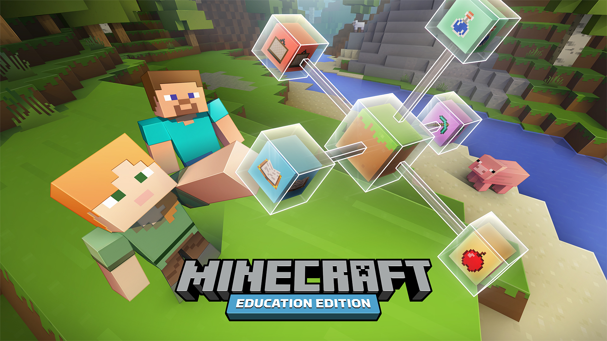
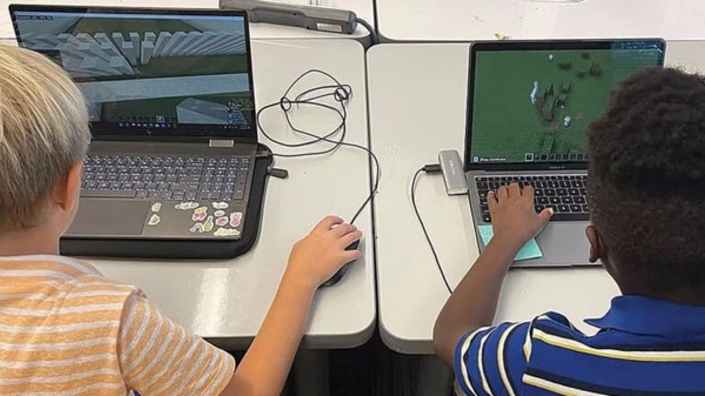

Raison 5 : L'Aspect Éducatif
Raison 5 : L'Aspect Éducatif
Une autre raison pour laquelle Minecraft est si populaire est son aspect éducatif. Le jeu offre une plateforme unique qui stimule la créativité, la logique et le travail d'équipe.
Apprentissage par le Jeu
Minecraft permet aux joueurs d'apprendre tout en s'amusant. Les mécanismes de jeu impliquent la résolution de problèmes, la gestion des ressources et la planification stratégique. Cela peut aider à développer des compétences essentielles pour la vie quotidienne.
Utilisation dans les Écoles
De nombreuses écoles (américaines néanmoins) utilisent Minecraft comme outil pédagogique. Des programmes éducatifs, comme Minecraft: Education Edition, sont conçus pour enseigner des concepts variés, allant des mathématiques à l'histoire, en passant par la programmation. Les enseignants peuvent créer des leçons interactives qui engagent les élèves de manière créative.
 
Créativité et Expression Personnelle
Le jeu encourage les joueurs à exprimer leur créativité. Que ce soit en construisant des structures élaborées ou en créant des aventures interactives, les possibilités sont infinies. Cela permet aux joueurs de développer leur pensée critique et leur capacité à innover.
Collaboration et Communication
Minecraft favorise la collaboration entre les joueurs. Travailler ensemble sur des projets communs nécessite une bonne communication et un esprit d'équipe, des compétences qui sont essentielles dans le monde réel.
Conclusion
En somme, l'aspect éducatif de Minecraft transforme le jeu en un outil d'apprentissage puissant. Que ce soit à travers l'apprentissage par le jeu, l'utilisation en classe ou la stimulation de la créativité, Minecraft offre une expérience enrichissante qui va au-delà du simple divertissement.